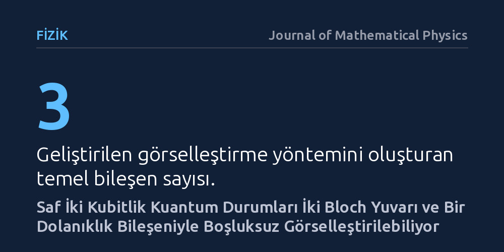

FIZIK · Journal of Mathematical Physics · 2026-10-09
Saf iki kubitlik kuantum durumlarının geometrisini eksiksiz yansıtacak sade bir görselleştirme yöntemi araştırıldı. Durum uzayının iki marjinal Bloch yuvarı ve bir dolanıklık bileşeniyle hiçbir boşluk veya yozlaşma olmadan tam temsil edilebildiği kanıtlandı.
Soyut matematiksel formüllerle ifade edilen iki kubitlik kuantum durumlarını ve dolanıklığı, bilgi kaybı yaşamadan sezgisel geometrik şekiller üzerinden anlamayı mümkün kılar.

Kuantum mekaniğinde tek bir temel bilgi birimi olan kubit, genellikle 'Bloch küresi' adı verilen üç boyutlu bir geometrik küre üzerinde rahatlıkla görselleştirilebilir. Bu küre, tek parçacığın saf durumlarını yüzeyinde, gürültülü karışık durumlarını ise iç hacminde göstererek fizikçilere güçlü bir görsel sezgi sunar. Ancak iş iki kubite ve bu kubitler arasındaki etkileşimlere geldiğinde işler aniden karmaşıklaşır.
İki kubitin oluşturduğu durum uzayı çok daha yüksek boyutlu ve soyuttur; üstelik parçacıkların kaderlerini birbirine bağlayan kuantum dolanıklığı devreye girdiğinde bu uzayı tek bir basit şekilde resmetmek imkânsız hale gelir. Araştırmacı Simon Grosse-Holz, tam da bu noktada durarak fizikçilerin yıllardır karmaşık cebirsel denklemlerle ele aldığı iki kubitlik saf kuantum durumlarını herkesin zihninde canlandırabileceği sade ve kayıpsız bir geometrik modele dönüştürmeyi hedefliyor.
Yazar bu çalışmada herhangi bir laboratuvar deneyi ya da bilgisayar simülasyonu yürütmedi. Bunun yerine, diferansiyel geometri ve kuantum durum uzayının matematiksel özelliklerini kullanarak kuramsal bir parametrelendirme geliştirdi. İncelenen nesne, saf iki kubitlik durumların oluşturduğu soyut uzaydı.
Önerilen model üç ana bileşenden meydana geliyor: Her iki kubitin kendi bağımsız durumunu gösteren iki ayrı Bloch yuvarı ve bu iki yuvar arasındaki bağı kuran bir dolanıklık bileşeni. Bu dolanıklık bileşeni, matematiksel olarak bir dönme-yansıma ile büzülme işleminden oluşuyor. Yazar, bu kurgunun rastgele bir benzetim olmadığını göstermek için durum uzayının önerilen parametrelere tam bir 'küresel difeomorfizma' ile bağlandığını matematiksel olarak ispatladı.
Çalışmanın ana bulgusu, iki kubitlik saf kuantum uzayının hiçbir geometrik boşluk veya matematiksel tekillik (yozlaşma) kalmaksızın bu üç bileşen üzerinden eksiksiz haritalanabilmesidir. Geliştirilen modelde, kubitlerden birinin durumu diğerinden bağımsız olarak incelendiğinde Bloch yuvarı içinde belirli bir noktaya karşılık gelirken, sistemin dolanıklık derecesi doğrudan bu yuvarların iç geometrisine yansıyor.
Ayrıca bu temsil sayesinde tek bir kubite uygulanan dönme işlemleri, dolanıklık serbestlik dereceleri ve bir kubit ölçüldüğünde diğerinin bürüneceği koşullu kuantum durumları doğrudan şekil üzerinde izlenebiliyor. Matematiksel ispat, modelin durum uzayının hem yerel yapısını hem de küresel topolojisini hiçbir bilgi kaybetmeden koruduğunu doğruluyor.
Bu çalışmanın ortaya koyduğu model, kuantum bilişim ve temel kuantum fiziğiyle ilgilenen araştırmacılara güçlü bir düşünme aracı sağlıyor. İki kubit arasındaki dolanıklık derecelerini ve durum değişimlerini matris çarpımlarına boğulmadan doğrudan geometrik bir nesne olarak görmek, kuantum algoritmalarının ve kuantum durum transferlerinin anlaşılmasını kolaylaştırabilir.
Bununla birlikte, çalışmanın sunduğu katkı pratik bir mühendislik buluşu değil, kuramsal bir bakış açısı zenginliğidir. Henüz bağımsız hakem onayından geçmemiş olan bu yaklaşım, iki kubitin ötesindeki çok kubitli karmaşık sistemlere doğrudan genişletilemese de kuantum durum geometrisini öğretmek ve kavramak için pedagojik ve kuramsal açıdan sağlam bir zemin sunuyor.